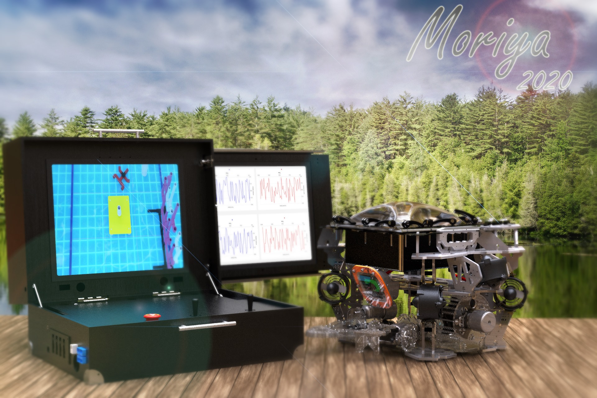

Remotely Operated Vehicle
This project aimed at building remotely operated vehicle (ROV) to participate in Mate ROV international competition
at U.S. I was responsible for building the hadware kit and the telematics control unit (TCU).
TCU Carries 3 Main Parts:
1.Power supplies to feed the vehicle with 1440 watt.2.Control unit contain the joystick, operational switches, and kill switch.
3.Pilot screens that display the stream of different cameras and dashboard that indicates the vehicle status.
Hardware Kit Main Functionalties:
1.Carrying DC-DC conversion to step down the power received though tether from 48 to 12 volt.2.Distributing the power to different ESCs, Servos, and MCUs.
3.Re-trasmitting the cameras' stream and send it through ethernet to the TCU PC using UDP protocol.
4.Sending control and status frames from TCU to the vehicle through ethernet.
ROV accomplished the following missions:
1.Using flight data to determine the search zone for the wreckage.2.Removing debris from the engine using a lift bag.
3.Returning the engine to the surface side of the pool using a lift bag.
4.Using tidal data and nautical chart to determine the optimum location for a tidal turbine.
5.Installing a tidal turbine in the optimum location.